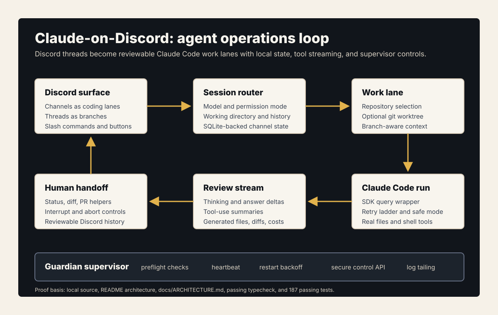
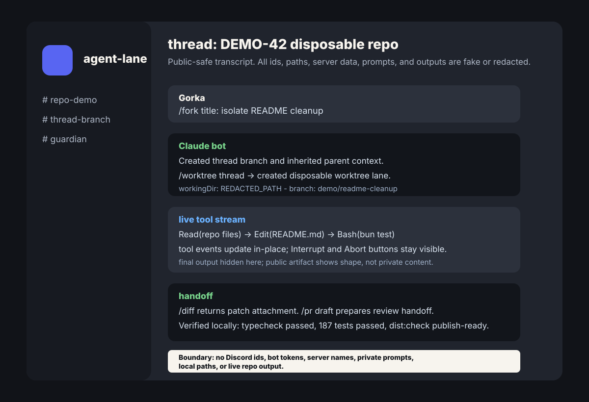
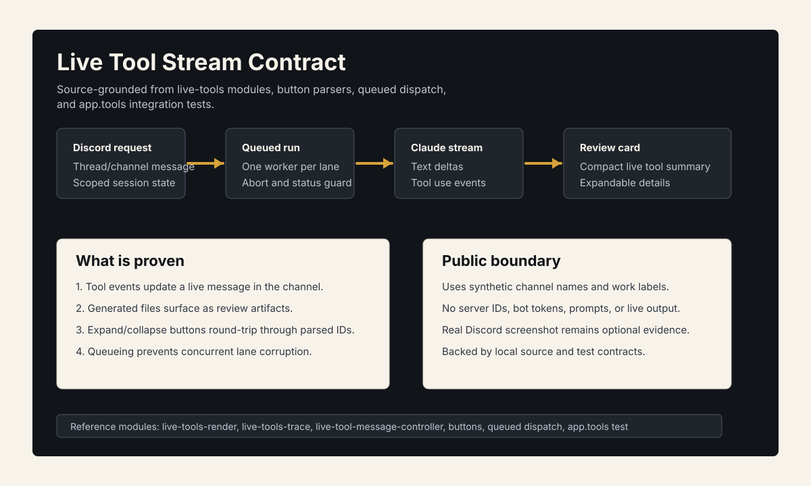

Problem
Coding agents are powerful but awkward when their work is hidden in a local terminal. A team needs clear lanes, visible tool events, branch/worktree separation, and a way to request work from the same collaboration surface where decisions happen.
What I Built
Claude-on-Discord turns Discord into an agent operations layer. Threads become scoped work sessions, commands start or continue Claude Code runs, tool events stream back to the channel, and repository work is organized around branches and worktrees.
- Interaction surfaceDiscord threads, commands, progress messages, and tool-event streaming.
- Execution modelClaude Code sessions, repository selection, isolated worktrees, and branch-aware actions.
- Review loopAgent output stays visible enough for inspection, handoff, and PR-oriented follow-through.



Technical Decisions
- Use Discord threads as durable, human-readable session containers.
- Keep agent execution tied to explicit repository and worktree state.
- Surface progress and tool events instead of treating the agent as a black box.
- Preserve a path from request to implementation to review instead of stopping at chat.
What This Proves
This is practical agentic tooling: not a demo chatbot, but infrastructure for delegating real coding tasks, managing concurrent work, and keeping a human reviewer in the loop.
Public Evidence
- README upgraded and pushed.
- Typecheck passed during README upgrade.
bun testpassed with 187 tests across 36 files.bun run dist:checkreports the package is publish-ready.- Public-safe architecture diagram captured.
- Source-grounded live tool stream contract captured.
- Sanitized disposable-thread transcript — available on request.
- Proof transcript — available on request.
- Public repo is now under
gorkamolero/claude-on-discord.